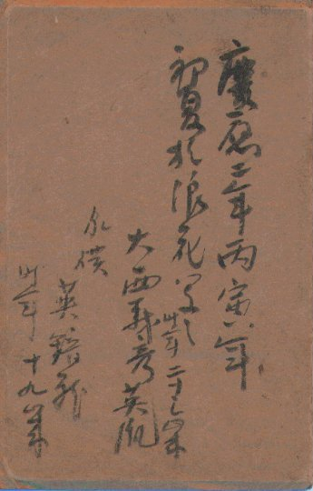

| 秘蔵写真集 |
我が家に残る珍しい写真を集めました。 どれも古い物です。 何か情報をお持ちの方はこちらまで。 |
|  | ||||
|
写真右は私の父方祖父の母(曾祖母)の弟。 藩士(紀州藩?) だったそうです。 父からの伝承では、これから西南戦争に行くところだそうですが、 西南戦争は明治 10 年 (1877年)。 写真台紙の裏面記録によると撮影は慶応 2 年(1866年) ですから、 話が合わない。 ちなみに、慶応 2 年には第二次長州征伐があったので、それかな？ 写真の台紙の文字も完全には読めない。どなたか読んで知らせて下さい。m(_o_)m
|
||||
|
この写真に関してこれまでに 2 通のメールを頂きました。 ※ 情報を頂いた方、ありがとうございます。(^^) |
||||
| 写真左が私の父方の祖父。皇紀 2604 年 = 1944年? 昭和 19 年ですから戦時中？ 私の郷里和歌山県新宮市の「お灯まつり」に登る際の装束で 記念撮影のようです。 人形が写っているのは「代わり参り」と言って お灯まつりに上れない人の代わりに連れていくことです。 |